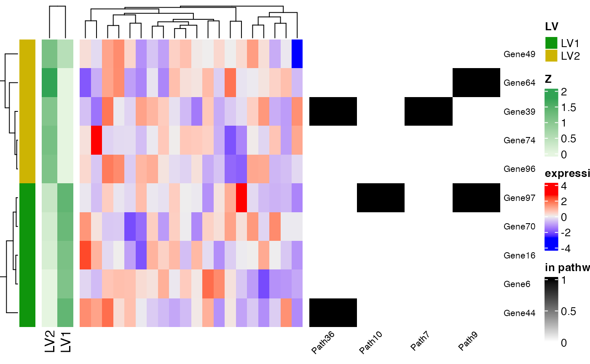

Produces a combined heatmap showing expression, pathway membership, and optionally Z-loadings for top genes per LV using ComplexHeatmap.
Usage
plotTopZ_Complex(
clampRes,
data,
priorMat,
top = 10,
top.pathway = 5,
index = NULL,
allLVs = FALSE,
Zheat = FALSE,
LV.names = NULL,
max.genes = 100,
max.col = 50,
seed = 1234
)Arguments
- clampRes
A CLAMP result list containing matrices
Z,U, etc.- data
Expression matrix with genes as rows.
- priorMat
Binary gene × pathway matrix.
- top
Integer, number of top genes per LV.
- top.pathway
Integer, number of top pathways per LV to annotate.
- index
Optional vector of LVs to include.
- allLVs
Logical; include all LVs.
- Zheat
Logical; whether to include the Z matrix as an additional heatmap.
- LV.names
Optional character vector for LV names.
- max.genes
Maximum number of genes allowed in the plot.
- max.col
Maximum number of columns (samples).
- seed
Random seed for column subsampling.
Examples
library(ComplexHeatmap)
#> Loading required package: grid
#> ========================================
#> ComplexHeatmap version 2.29.0
#> Bioconductor page: http://bioconductor.org/packages/ComplexHeatmap/
#> Github page: https://github.com/jokergoo/ComplexHeatmap
#> Documentation: http://jokergoo.github.io/ComplexHeatmap-reference
#>
#> If you use it in published research, please cite either one:
#> - Gu, Z. Complex Heatmap Visualization. iMeta 2022.
#> - Gu, Z. Complex heatmaps reveal patterns and correlations in multidimensional
#> genomic data. Bioinformatics 2016.
#>
#>
#> The new InteractiveComplexHeatmap package can directly export static
#> complex heatmaps into an interactive Shiny app with zero effort. Have a try!
#>
#> This message can be suppressed by:
#> suppressPackageStartupMessages(library(ComplexHeatmap))
#> ========================================
library(Matrix)
# Simulate small CLAMP-like results
set.seed(123)
genes <- paste0("Gene", 1:100)
samples <- paste0("S", 1:20)
lvs <- paste0("LV", 1:3)
# Simulated Z (gene loadings) and U (pathway loadings)
Z <- matrix(rnorm(100 * 3), nrow = 100, dimnames = list(genes, lvs))
U <- matrix(abs(rnorm(50 * 3)),
nrow = 50,
dimnames = list(paste0("Path", 1:50), lvs)
)
# Expression data
expr_data <- matrix(rnorm(100 * 20),
nrow = 100,
dimnames = list(genes, samples)
)
# Binary gene × pathway matrix
priorMat <- matrix(sample(0:1, 100 * 50, replace = TRUE, prob = c(0.9, 0.1)),
nrow = 100, ncol = 50,
dimnames = list(genes, paste0("Path", 1:50))
)
# Create a CLAMP-like result list
clampRes <- list(Z = Z, U = U)
# Plot top genes and pathway memberships
plotTopZ_Complex(clampRes, expr_data, priorMat,
top = 5, top.pathway = 3, index = 1:2, Zheat = TRUE
)
